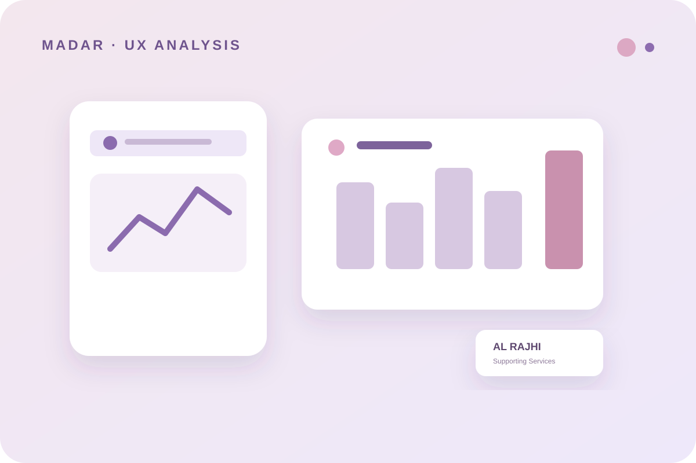

← Back to selected workOVERVIEW MY CONTRIBUTION CONTEXT
3 — UX ANALYSIS · COOPERATIVE TRAINING
Madar
UX analysis of Madar, the pilgrim-focused app of Al Rajhi Supporting Services Company.

During cooperative training at Al Rajhi Supporting Services Company, I contributed to UX analysis of Madar, an app designed for pilgrims.
My suggestions included making the emergency button clear in the first menu, adding a “How to Use the App” option, and reducing unnecessary file downloads.
The work was part of cooperative training and focused on reviewing an existing service and identifying practical usability opportunities.